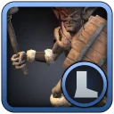

Talent
Venom Cyclone
Venom Cyclone is a level 6 talent of Pip Quickfingers.
Venom Cyclone is a talent of Pip Quickfingers, offered at player level 6 to the Pickpocket and Brawler builds.
Description
Toxic Twirl deals 50% more damage and adds two stacks of toxin.
What it changes
Toxic Twirl becomes Venom Cyclone.
- The change takes effect from the next fight, and the upgraded form keeps the original's place in the casting order.
- The ability stops with the commander: if the commander falls, it is not cast again in that fight.
- A talent is kept for the rest of the match.
Ability
| Ability | Timing | Description | |
|---|---|---|---|
| Before the talent | Toxic Twirl | Cooldown 3 seconds | Pip spins and flicks poisoned darts at several enemies within 3 cells, dealing physical damage and adding a stack of toxin to each. Pip heals for each dart. |
| With the talent |  Venom Cyclone Venom Cyclone | Cooldown 3 seconds | Pip spins and flicks potent darts at several enemies within 3 cells, dealing 50% more physical damage and adding two stacks of toxin to each. Pip heals for each dart. |
Before and after
Everything that differs between the two forms. Anything not listed is the same in both.
| What changes | Toxic Twirl (original) | Venom Cyclone (upgraded) |
|---|---|---|
| Physical damage to each enemy | Levels 1 to 6: 25 Levels 7 to 8: 35 Levels 9 to 10: 45 | Levels 1 to 6: 37.5 Levels 7 to 8: 52.5 Levels 9 to 10: 67.5 |
| Pip's Toxin on enemies: stacks added to each target | 1 | 2 |
The choice
At each talent level you are shown the options for your build and keep one. Taking Venom Cyclone means giving up the other option of that level for the rest of the match.
| Build | Player level | Competes with | The alternative |
|---|---|---|---|
| Pickpocket and Brawler | 6 |  Slippery Crew | Every ally gains 10% evasion. |
The full ladders are on the talents page; the rules are on How commanders work.